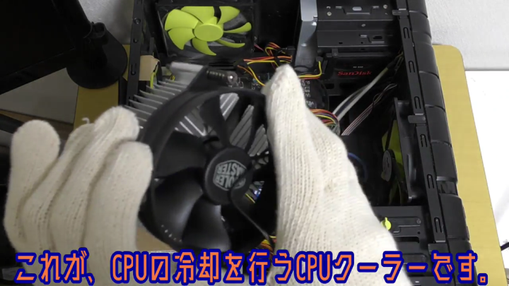

JETLIC Terakoyaとは
JETLIC Terakoyaは子どもたちがプログラミングだけでなくコンピューターに関する知識を無料で学べる場です
教師はいません 私たちJETLICメンバーが教えることもあれば、子どもたちから学ぶこともあります
ものづくりに興味のある人はぜひ参加してください
場所は神戸市青少年会館またはオンラインです
神戸市青少年会館へのアクセスはこちら(外部サイト)過去開催イベント
パソコンの中身を調べてまとめてみよう(21年夏・オンライン)
micro:bitでゲームを作ろう(22年春・オンライン)
Scratchでゲームを作ろう(22年夏・オンライン)
今後の開催について
次回は3月下旬ごろの開催を予定しております
詳細をお待ちください